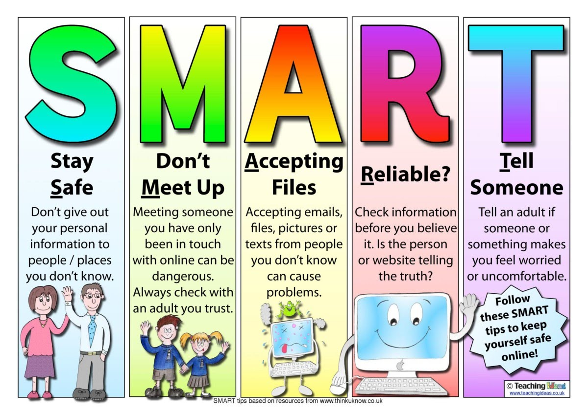

Online safety is a very important part of the ICT course. Some key things to note is that it is important to be aware of many different risks associated with the internet. Technology is a fantastic tool for teaching and learning and is an essential part of everyday life; children and young people must be supported to develop strategies to manage and respond to online risk so they can be empowered to build resilience. Whilst the Computing curriculum will no doubt form an essential part of online safety education, safe and responsible use of technologies must be embedded throughout the curriculum to ensure that all children develop the required range of digital literacy skills
In Summary; online safety is the practice of protecting yourself and your personal information when using the internet. It is important to be aware of potential risks and to take steps to avoid them. Here are some tips for staying safe online:
1. Use strong, unique passwords for each of your online accounts.
2. Be cautious when sharing personal information, such as your full name, address, and date of birth.
3. Avoid clicking on links in emails or messages from unknown senders.
4. Be careful about who you communicate with online, and never meet someone in person that you have only met online.
5. Use privacy settings on your social media accounts to control who can see your posts and personal information.
6. Be aware of potential scams and do not give out personal information or money to someone you don't know.
7. If you encounter something online that makes you uncomfortable, tell a trusted adult.
By following these tips, you can help to protect yourself and your personal information when using the internet. It is important to be cautious and aware of potential risks in order to stay safe online.
Sources:
Online Safety for Kids and Teens: Tips and Advice
Online Safety: A Guide for Parents and Carers
Below are some suggested videos for you to watch to help explain these aspects:
Malware
Phishing
Cyber Bullying